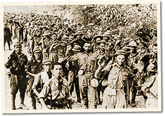

|
j
a v a s c r i p t |
May 6, 1942, Corregidor has fallen!

Corregidor Surrender
Just got the sad news from Dad. It occurs to me now that the explosions I heard at 0700 may have been the USAFFE blowing up its fortifications. The news caught Manila unprepared and at 1830 many people still didn't know about it. At 1900 there were three more heavy booms. Maurice had a talk with a Spanish boy who was resting his swollen feet at home after an escape from Bataan. The day before the surrender, an officer told his group that it was "everyone for himself" because the jig was up. Many stayed, but a few, including the Spaniard, made for the mountains. He joined a refugee family. They gave him civilian clothes but had no shoes to spare. He walked barefoot as far as he could then sent word to his family to fetch him. |
|
|
|
|